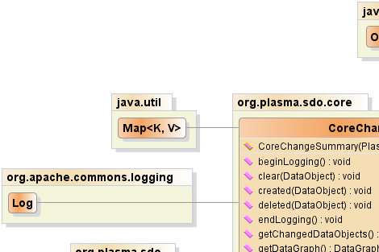
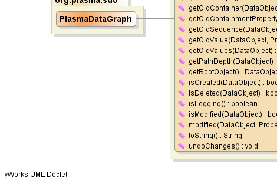
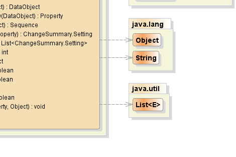

- java.lang.Object
-
- org.plasma.sdo.core.CoreChangeSummary
-
- All Implemented Interfaces:
- commonj.sdo.ChangeSummary, java.io.Serializable, PlasmaChangeSummary
public class CoreChangeSummary extends java.lang.Object implements PlasmaChangeSummary, java.io.Serializable
A change summary is used to record changes to DataObjects, allowing applications to efficiently and incrementally update back-end storage when required.- See Also:
- Serialized Form
-
 
 
-
-
Constructor Summary
Constructors Constructor and Description CoreChangeSummary(PlasmaDataGraph dataGraph)
-
Method Summary
Methods Modifier and Type Method and Description voidbeginLogging()Clears the List ofchangesand turns change logging on.voidclear(commonj.sdo.DataObject dataObject)Removes all change information for the given data object within this change summary.voidcreated(commonj.sdo.DataObject dataObject)Register the given data object as a created object within this change summary.voiddeleted(commonj.sdo.DataObject dataObject)Register the given data object as a deleted object within this change summary.voidendLogging()An implementation that requires logging may throw an UnsupportedOperationException.java.util.List<commonj.sdo.DataObject>getChangedDataObjects()Returns a list consisting of all thedata objectsthat have been changed whilelogging.commonj.sdo.DataGraphgetDataGraph()Returns thedata graphassociated with this change summary or null.commonj.sdo.DataObjectgetOldContainer(commonj.sdo.DataObject dataObject)Returns the value of thecontainerdata object at the point when loggingbegan.commonj.sdo.PropertygetOldContainmentProperty(commonj.sdo.DataObject dataObject)Returns the value of thecontainment propertydata object property at the point when loggingbegan.commonj.sdo.SequencegetOldSequence(commonj.sdo.DataObject dataObject)Returns the value of thesequencefor the data object at the point when loggingbegan.commonj.sdo.ChangeSummary.SettinggetOldValue(commonj.sdo.DataObject dataObject, commonj.sdo.Property property)Returns asettingfor the specified property representing the property value of the givendataObjectat the point when loggingbegan.java.util.List<commonj.sdo.ChangeSummary.Setting>getOldValues(commonj.sdo.DataObject dataObject)Returns a list ofsettingsthat represent the property values of the givendataObjectat the point when loggingbegan.intgetPathDepth(commonj.sdo.DataObject dataObject)Returns the path depth within the data graph for the given data object.commonj.sdo.DataObjectgetRootObject()Returns the ChangeSummary root DataObject - the object from which changes are tracked.booleanisCreated(commonj.sdo.DataObject dataObject)Returns whether or not the specified data object was created whilelogging.booleanisDeleted(commonj.sdo.DataObject dataObject)Returns whether or not the specified data object was deleted whilelogging.booleanisLogging()Indicates whether change logging is on (true) or off (false).booleanisModified(commonj.sdo.DataObject dataObject)Returns whether or not the specified data object was updated whilelogging.voidmodified(commonj.sdo.DataObject dataObject, commonj.sdo.Property property, java.lang.Object value)Register the given data object as a modified object within this change summary for the given property.java.lang.StringtoString()voidundoChanges()This method is intended for use by service implementations only.
-
-
-
Constructor Detail
-
CoreChangeSummary
public CoreChangeSummary(PlasmaDataGraph dataGraph)
-
-
Method Detail
-
created
public void created(commonj.sdo.DataObject dataObject)
Description copied from interface:PlasmaChangeSummaryRegister the given data object as a created object within this change summary.- Specified by:
createdin interfacePlasmaChangeSummary- Parameters:
dataObject- the created data object
-
deleted
public void deleted(commonj.sdo.DataObject dataObject)
Description copied from interface:PlasmaChangeSummaryRegister the given data object as a deleted object within this change summary.- Specified by:
deletedin interfacePlasmaChangeSummary- Parameters:
dataObject- the deleted data object
-
modified
public void modified(commonj.sdo.DataObject dataObject, commonj.sdo.Property property, java.lang.Object value)Description copied from interface:PlasmaChangeSummaryRegister the given data object as a modified object within this change summary for the given property.- Specified by:
modifiedin interfacePlasmaChangeSummary- Parameters:
dataObject- the modified data objectproperty- the modified propertyvalue- the previous value for the given property
-
clear
public void clear(commonj.sdo.DataObject dataObject)
Description copied from interface:PlasmaChangeSummaryRemoves all change information for the given data object within this change summary.- Specified by:
clearin interfacePlasmaChangeSummary- Parameters:
dataObject- the data object
-
beginLogging
public void beginLogging()
Clears the List ofchangesand turns change logging on. No operation occurs if logging is already on.- Specified by:
beginLoggingin interfacecommonj.sdo.ChangeSummary- See Also:
endLogging(),isLogging()
-
endLogging
public void endLogging()
An implementation that requires logging may throw an UnsupportedOperationException. Turns change logging off. No operation occurs if logging is already off.- Specified by:
endLoggingin interfacecommonj.sdo.ChangeSummary- See Also:
beginLogging(),isLogging()
-
getChangedDataObjects
public java.util.List<commonj.sdo.DataObject> getChangedDataObjects()
Returns a list consisting of all thedata objectsthat have been changed whilelogging.The
newandmodifiedobjects in the List are references to objects associated with this ChangeSummary. Thedeletedobjects in the List are references to objects at the time that event logging was enabled;Each changed object must have exactly one of the following methods return true:
isCreated,isDeleted, orisModified.- Specified by:
getChangedDataObjectsin interfacecommonj.sdo.ChangeSummary- Returns:
- a list of changed data objects.
- See Also:
isCreated(DataObject),isDeleted(DataObject),isModified(DataObject)
-
getDataGraph
public commonj.sdo.DataGraph getDataGraph()
Returns thedata graphassociated with this change summary or null.- Specified by:
getDataGraphin interfacecommonj.sdo.ChangeSummary- Returns:
- the data graph.
- See Also:
DataGraph.getChangeSummary()
-
getOldContainer
public commonj.sdo.DataObject getOldContainer(commonj.sdo.DataObject dataObject)
Returns the value of thecontainerdata object at the point when loggingbegan.- Specified by:
getOldContainerin interfacecommonj.sdo.ChangeSummary- Parameters:
dataObject- the object in question.- Returns:
- the old container data object.
-
getOldContainmentProperty
public commonj.sdo.Property getOldContainmentProperty(commonj.sdo.DataObject dataObject)
Returns the value of thecontainment propertydata object property at the point when loggingbegan.- Specified by:
getOldContainmentPropertyin interfacecommonj.sdo.ChangeSummary- Parameters:
dataObject- the object in question.- Returns:
- the old containment property.
-
getOldSequence
public commonj.sdo.Sequence getOldSequence(commonj.sdo.DataObject dataObject)
Returns the value of thesequencefor the data object at the point when loggingbegan.- Specified by:
getOldSequencein interfacecommonj.sdo.ChangeSummary- Parameters:
dataObject- the object in question.- Returns:
- the old containment property.
-
getOldValue
public commonj.sdo.ChangeSummary.Setting getOldValue(commonj.sdo.DataObject dataObject, commonj.sdo.Property property)Returns asettingfor the specified property representing the property value of the givendataObjectat the point when loggingbegan.Returns null if the property was not modified and has not been
deleted.- Specified by:
getOldValuein interfacecommonj.sdo.ChangeSummary- Parameters:
dataObject- the object in question.property- the property of the object.- Returns:
- the Setting for the specified property.
- See Also:
getChangedDataObjects()
-
getOldValues
public java.util.List<commonj.sdo.ChangeSummary.Setting> getOldValues(commonj.sdo.DataObject dataObject)
Returns a list ofsettingsthat represent the property values of the givendataObjectat the point when loggingbegan.In the case of a
deletedobject, the List will include settings for all the Properties.An old value setting indicates the value at the point logging begins. A setting is only produced for
modifiedobjects if either the old value differs from the current value or if the isSet differs from the current value.No settings are produced for
createdobjects.- Specified by:
getOldValuesin interfacecommonj.sdo.ChangeSummary- Parameters:
dataObject- the object in question.- Returns:
- a list of settings.
- See Also:
getChangedDataObjects()
-
getRootObject
public commonj.sdo.DataObject getRootObject()
Returns the ChangeSummary root DataObject - the object from which changes are tracked. When a DataGraph is used, this is the same as getDataGraph().getRootObject().- Specified by:
getRootObjectin interfacecommonj.sdo.ChangeSummary- Returns:
- the ChangeSummary root DataObject
-
isCreated
public boolean isCreated(commonj.sdo.DataObject dataObject)
Returns whether or not the specified data object was created whilelogging. Any object that was added to the scope but was not in the scope when logging began, will be considered created.- Specified by:
isCreatedin interfacecommonj.sdo.ChangeSummary- Parameters:
dataObject- the data object in question.- Returns:
trueif the specified data object was created.- See Also:
getChangedDataObjects()
-
isModified
public boolean isModified(commonj.sdo.DataObject dataObject)
Returns whether or not the specified data object was updated whilelogging. An object that was contained in the scope when logging began and remains in the scope when logging ends will be considered potentially modified.An object considered modified must have at least one old value setting.
- Specified by:
isModifiedin interfacecommonj.sdo.ChangeSummary- Parameters:
dataObject- the data object in question.- Returns:
trueif the specified data object was modified.- See Also:
getChangedDataObjects()
-
isDeleted
public boolean isDeleted(commonj.sdo.DataObject dataObject)
Returns whether or not the specified data object was deleted whilelogging. Any object that is not in scope but was in scope when logging began will be considered deleted.- Specified by:
isDeletedin interfacecommonj.sdo.ChangeSummary- Parameters:
dataObject- the data object in question.- Returns:
trueif the specified data object was deleted.- See Also:
getChangedDataObjects()
-
getPathDepth
public int getPathDepth(commonj.sdo.DataObject dataObject)
Description copied from interface:PlasmaChangeSummaryReturns the path depth within the data graph for the given data object.- Specified by:
getPathDepthin interfacePlasmaChangeSummary- Parameters:
dataObject- the data object- Returns:
- the path depth
-
isLogging
public boolean isLogging()
Indicates whether change logging is on (true) or off (false).- Specified by:
isLoggingin interfacecommonj.sdo.ChangeSummary- Returns:
trueif change logging is on.- See Also:
beginLogging(),endLogging()
-
undoChanges
public void undoChanges()
This method is intended for use by service implementations only. Undoes all changes in the log to restore the tree of DataObjects to its original state when logging began. isLogging() is unchanged. The log is cleared.- Specified by:
undoChangesin interfacecommonj.sdo.ChangeSummary- See Also:
beginLogging(),endLogging(),isLogging()
-
toString
public java.lang.String toString()
- Overrides:
toStringin classjava.lang.Object
-
-